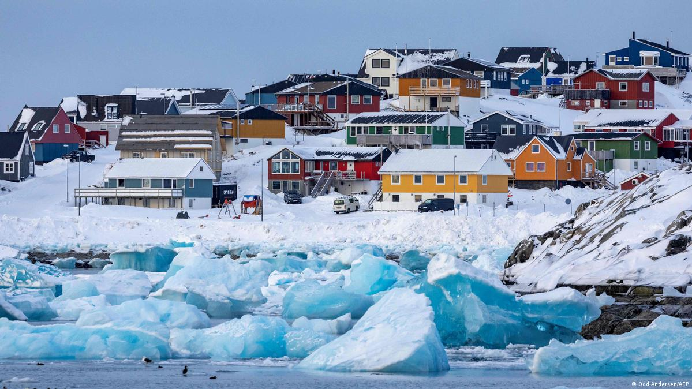

Discovering Greenland: A Land of Ice and Silence

When people think about travel destinations, they often imagine sunny beaches or bustling big cities. But some places are special precisely because they are quiet, wild, and incredibly different. One of these places is Greenland.
An Unreal Landscape
Greenland is the largest island in the world, and most of it is covered by ice. When you look out across the horizon, you see huge glaciers, towering white mountains, and bright blue icebergs floating silently in the ocean. The landscape looks almost unreal, like something from another planet.
The Magic of the Winter Sky
One of the most magical experiences in Greenland happens in winter. At night, the dark sky can suddenly light up with dancing green and purple colors. This natural light show is called the Aurora Borealis, also known as the Northern Lights. For many travelers, standing in the freezing silence watching this phenomenon is the main reason for their visit.
Wildlife and Culture
Nature in Greenland is also full of interesting wildlife. In the Arctic waters, visitors may spot whales and seals. On land, animals perfectly adapted to the cold environment—like polar bears, reindeer, and Arctic foxes—roam the ice. Seeing these animals in the wild is something you never forget.
But Greenland is not only about nature; it is home to a deeply rooted and unique culture. Many people living here belong to the Inuit community, whose traditions are intimately connected to the Arctic environment. Fishing, storytelling, and handmade art are still vital, everyday parts of life here.
The True Adventure
Traveling in Greenland can be vastly different from traveling in other countries. There are very few roads, meaning many towns and settlements are only connected by boats, helicopters, or small airplanes. Because of this, visiting Greenland feels like a genuine, rugged adventure.
For travelers who love raw nature, silence, and highly unusual landscapes, Greenland is an unforgettable destination. It is a place where you can slow down, truly absorb the beauty of the Arctic, and experience a world that feels incredibly far away from modern city life.
Pro Travel Tip:
Greenland can be expensive, but you can save a lot of money by staying in local youth hostels and buying groceries at the local Pilersuisoq supermarkets instead of eating at restaurants!